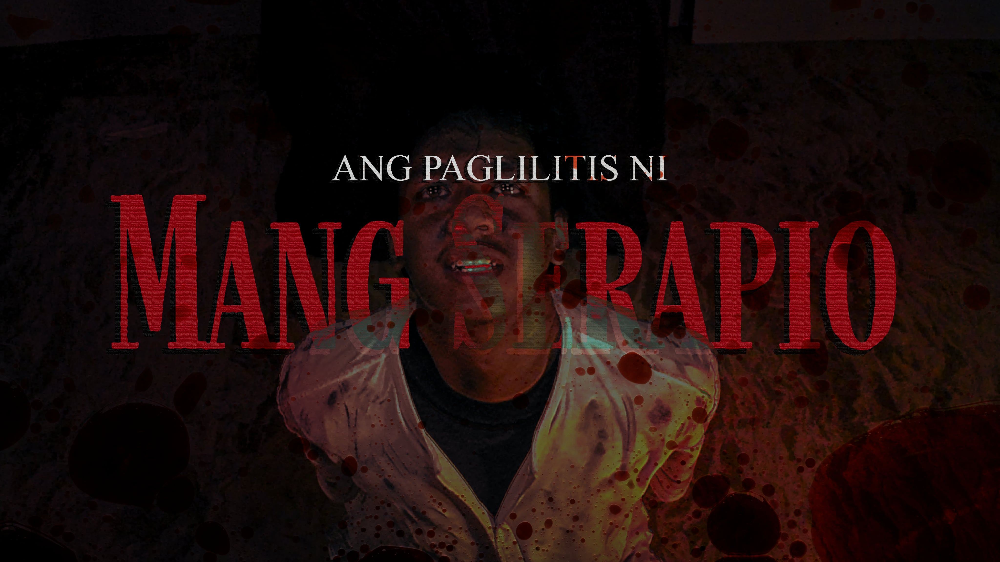
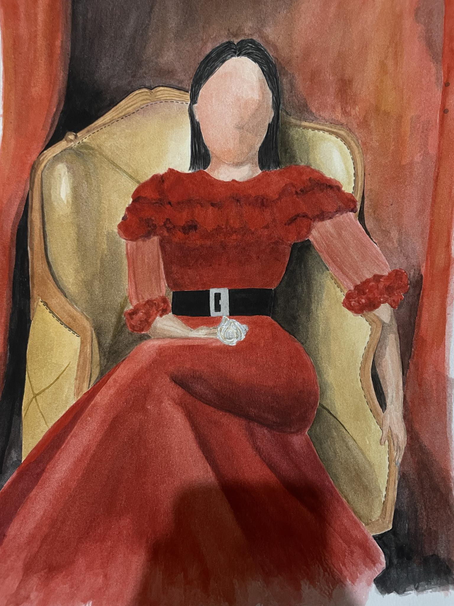
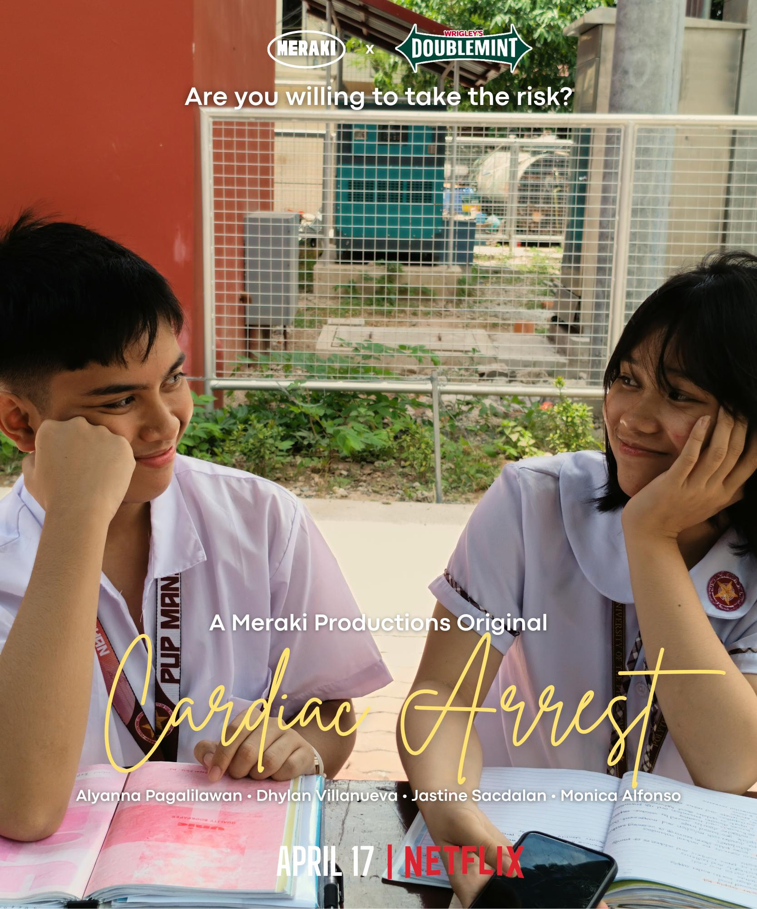

Gallery
The following are media projects throughout my Senior High School and High School journey that I have written or directed!
Ang Paglilitis Ni Mang Serapio (2025)
What was originally intended as a musical, became a film due to unseen circumstances—Ang Paglilitis Ni Mang Serapio is originally a play written by Paul Dumol, was later on re-imagined by us, STEM 12-1 students to a musical film that tackles social injustice in requirement of our Contemporary Philippine Art from the Region course in Grade 12. The film follows the life of Mang Serapio, a trash collector in the Philippines who has been wrongly accused of robbing the government from his daily taxes. It tackles love, grief, and abuse through the lens of an ordinary man. Albeit tiring and stressful, it was one of the most fulfilling moments of my Senior High School life as I got to somewhat pursue my passion in film.
Lifetimes in Canvasses (2024)
Inspired by the famous and heartbreaking movie Portrait of a Lady on Fire, Lifetimes in Canvasses is a film made in requirement of our Filipino sa Piling Larang course in Grade 11. The film travels through two timelines merging into one; following the lives of Carmela and Mara, who mysteriously connect over a random painting in a museum, without knowing their past lives have been intertwined with one another. This was one of the more challenging films to write and direct as I had to navigate and weave two timelines into one. However, I would say that this is my favorite film I have made as it featured more than a love story—it was a story of representation, fear, religion, and self-acceptance.
Cardiac Arrest (2023)
Cardiac Arrest was my first ever experience as a director, in requirement of our Arts 10 course, together with my closest friends, we wrote a short film about Alyanna, an introverted transfer student who found a friend and a lover in her classmate Dhylan. Although admittedly dated and flawed, this film holds a special place in my heart as it is the epitome of young love—it's cringe, confusing, but heartwrenchingly cute.
